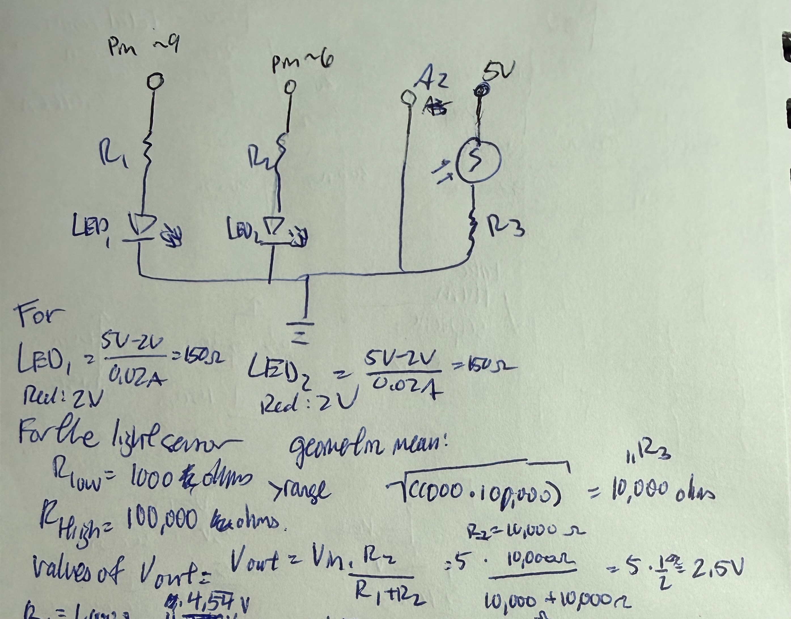
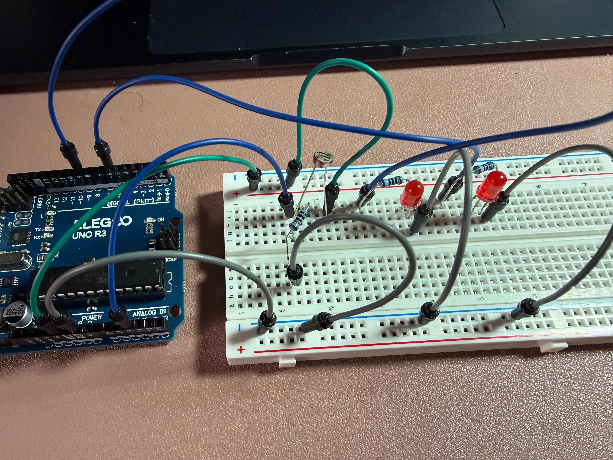
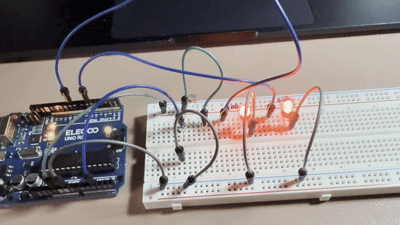
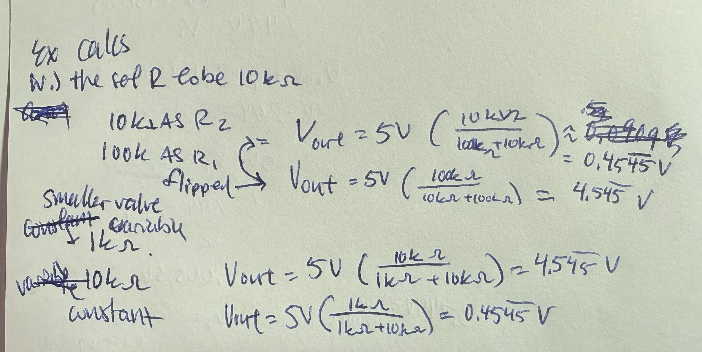
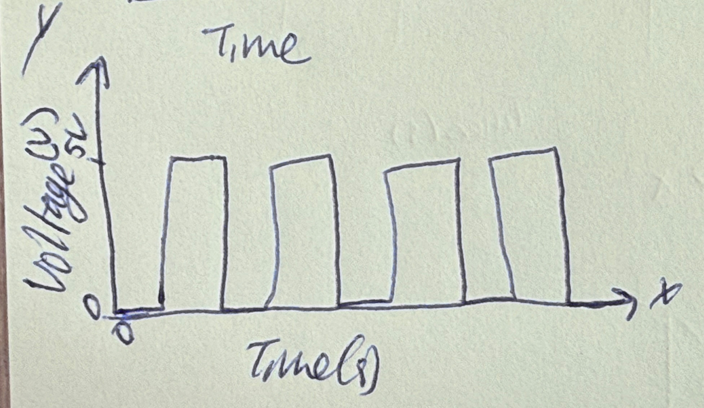

Here is all the documentation for assignment 3!

The schematic is composed of a light sensor and two LEDs. The current for each LED was set to 20 mA for a total of 40mA,. The calculations are included within the image, with the voltage for the LEDs (red) set to 2V with a calculated resistance of 150 ohms. A resistor for the light sensor was chosen to be 10k ohms due to the range of resistance of the sensor being around 1k ohms to 100k ohms and was the resistor used in-class. The voltage divider can read from around 0 to 5V. 10k was calculated through the geometric mean of the range so it is large compared to the smallest value of the variable resistor and small compared to the largest value of the variable resistor.

When building the circuit, the resistor values calculated for the LEDs did not match the resistors given in the kit so values close were used. Instead of 150 ohms, a resistor with 100 ohms was used. The light sensor has a resistor of 10k.



Explanation for values chosen: the values for mapping were obtained via calibration to ensure since the range of 0 to 1023 values for the sensor may be hard to achieve in the physical world since the room that it is placed in will have variable lighting and make it harder to dim to 0.
// Analog pin number the light sensor is put into
const int analogInPin = A2;
// Analog output pin that the first LED is connected to
const int led1 = 9;
// Analog output pin that the second LED is connected to
const int led2 = 6;
// value read from the light sensor
int sensorValue = 0;
// value output to the PWM (analog out) (that will be mapped from the input)
int outputValue = 0;
// variable to set the minimum value for sensor
int sensorMin = 1023;
// variable to set the maximum value for sensor
int sensorMax = 0;
//code set to run once when arduino is set up
void setup() {
//initializing led1 as an output
pinMode(led1, OUTPUT);
//initializing led1 as an output
pinMode(led2, OUTPUT);
// calibrate the sensor max and min during the first five seconds
while (millis() < 5000) {
//reading in analog value from sensor
sensorValue = analogRead(analogInPin);
// check if the sensor value is larger than current max set
if (sensorValue > sensorMax) {
//setting the value for sensor max from the sensor value
sensorMax = sensorValue;
}
//check if the sensor value is smaller than current min set
if (sensorValue < sensorMin) {
//setting sensormin to the sensor value
sensorMin = sensorValue;
}
}
// initialize serial communications at 9600 bps:
Serial.begin(9600);
//printing out beginning of sensor max
Serial.print("Sensor Max = ");
//prints the value of sensor max
Serial.print(sensorMax);
//printing out beginning of sensor min
Serial.print("\t Sensor Min = ");
//prints the value of sensor min
Serial.println(sensorMin);
}
//Contains the code that will continue to run on the arduino
void loop() {
//reading in analog value from sensor
sensorValue = analogRead(analogInPin);
//constraining the range of sensor values between the sensormin and sensor max
int sensVal = constrain(sensorValue, sensorMin, sensorMax);
//maps the value of the sensor to be between 0-255 (analog) from the range of sensor max and min
int outVal = map(sensVal, sensorMin, sensorMax, 0, 255);
// change the analog out value of led1
analogWrite(led1, outVal);
// change the analog out value of led2
analogWrite(led2, outVal);
// print the value of sensor input value
Serial.print("Sensor input value: ");
//prints of the sensor value
Serial.print(sensorValue);
//prints to output value =
Serial.print("\t Output value = ");
//prints of the out value
Serial.println(outVal);
// wait 3 milliseconds before the start of the next loop
delay(30);
}